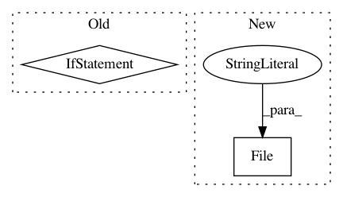

d6cfffd01a2a3129739c6e76f9d966287b20b7c5,bin/basenji_predict.py,,main,#,40
Before Change
target_means_median = np.median(target_means)
target_means /= target_means_median
norm_out = open("%s/normalization.txt" % options.out_dir, "w")
print("\n".join([str(tu) for tu in target_means]), file=norm_out)
norm_out.close()
After Change
sess.run(test_init_op)
test_preds = model.predict_tfr(sess, sample=options.sample_down)
preds_h5 = h5py.File("%s/preds.h5" % options.out_dir, "w")
preds_h5.create_dataset("preds", data=test_preds)
preds_h5.close()
// print normalization factors
In pattern: SUPERPATTERN
Frequency: 3
Non-data size: 2
Instances
Project Name: calico/basenji
Commit Name: d6cfffd01a2a3129739c6e76f9d966287b20b7c5
Time: 2019-04-12
Author: drk@calicolabs.com
File Name: bin/basenji_predict.py
Class Name:
Method Name: main
Project Name: hyperspy/hyperspy
Commit Name: 62e13f209e0b7b4c2c757202601c8a5051a05793
Time: 2019-05-03
Author: 14300780+ssomnath@users.noreply.github.com
File Name: hyperspy/io_plugins/usid_hdf5.py
Class Name:
Method Name: file_writer
Project Name: senarvi/theanolm
Commit Name: bcf723a2f67a372e6b03a453149a82ecf2766fff
Time: 2015-12-24
Author: seppo.git@marjaniemi.com
File Name: theanolm/commands/train.py
Class Name:
Method Name: train